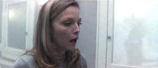

| What Lies
Beneath (SE)/B,A |
| Dreamworks/2000/130/ANA
2.35 |
I am getting used to modern suspense films that fail to exhibit
restraint .In trying to mine the last drop from his material ,director Robert Zemeckis' What
Lies Beneath becomes overlong and over indulgent. It also suffers from a sense of
redundancy. What Lies Beneath is part "weeper" in tone, as a successful
professor and his beautiful, talented wife face a romantic crisis. It builds the case for a
supernatural thriller with certain skill; it's when it finally gets there that it bogs down in its
own muddied waters.
 |
| Mirror, mirror in every scene. © Dreamworks |
Claire and Norman Spencer live in a wonderful neo gothic home overlooking a
Vermont lake. Norman is one of the darlings of the genetics world, approaching some breakthrough
research. Their lives are about to change as their daughter leaves for college. A new neighbor
moves in next door and provides some minor entertainment, but the lonely house just isn't the same
anymore. There are constant references to a terrible auto accident Claire has had, and what does it
all have to do with Claire's former marriage. The story closes tightly around Claire and the house
and explodes from there.
There are very few characters that get much screen time in What Lies
Beneath. Michelle Pfeiffer playing Claire must carry the film on her delicate shoulders, and
while it's a heavy task, she's quite up to it. Pfeiffer does exhibit restraint. Though she is a
very expressive actress, she contains her mannerisms effectively, and happily, is seldom too coy.
Harrison Ford plays Norman Spencer. Ford and Pfeiffer in a romantic thriller: sounds like great
chemistry. Ford, however, does not score as well as Pfeiffer. He often rings false. He's almost
oily, as if he knows that something is amiss with his character. But we are not supposed to know
it. Is this the guy Claire fell in love with, was swept off her feet by, the golden boy of the
halls of ivy?
Robert Zemeckis is a talented director. He makes what he can of the
script, but that's what keep the film from really flying. It's funny, I do think the film would
have been better as a traditional forties weeper. Keep the suspense, but let it lead somewhere
else. Maybe she really is going nuts. I can hear the violins now.
Beautifully restrained, this transfer shows virtually no undue
edginess. The image is very film-like without getting soft. Colors are well saturated and used to
fine effect. Check out the brilliant garden colors. Steam flows with perfect grace and nothing is
loft in its mist. Shadow detail is excellent. Fine, rich blacks, excellent indoor and outdoor
balance of look, and light output to spare are all positives in this outstanding DVD. Delivered in
both Dolby Digital 5:1 and DTS Surround in an excellent mix. Peripheral sounds are located for
maximum effect. Overall ambiance is outstanding.
Audio commentary from Robert Zemeckis, and producers Steve Starkey
and Jack Rapke is the core of this special edition from Dreamworks. Hitchcock comes up a number of
times in the commentary as a source of inspiration for the production. The behind the scenes
featurette from HBO provides a nice look at Zemeckis' career.
The menu system is another intricate affair that takes too long for my
purposes. I am growing frustrated with the inflated frills of menus.
|
|
|
|

Selections from the Feature Archive
include articles on Akira Kurosawa, Frank
Darabont, Blonde Bimbos, Hollywood Street Gangs, or Vietnam: The
Hollywood Pariah, and many more....
Film noir: The phrase hangs awkwardly on the tongue,
shadowy images peek out from behind half-closed doors. Click on the Noir and Noir
Again symbol for a look into the dark spaces of Hollywood's revisiting of film noir.

Ghost Dog: Way of the Samurai

Ancient Japanese samurai tradition compared to new world Italian
mobsters filtered through the imagination of Jim Jarmusch. Forest Whitaker is outstanding.

Need a daily fix of movie
quotes. Reel Quotes Newsletter has the answer. Click on the Reel Quotes symbol for more.


The Movie Poster
Archive includes extensive poster images from the films of stars like Susan Hayward, Kirk Douglas,
Katharine Hepburn and many more. Our
featured star is Kirk Douglas. |